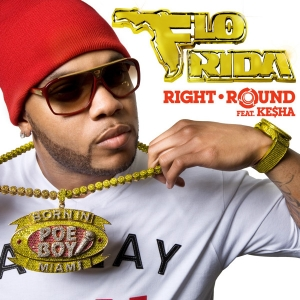
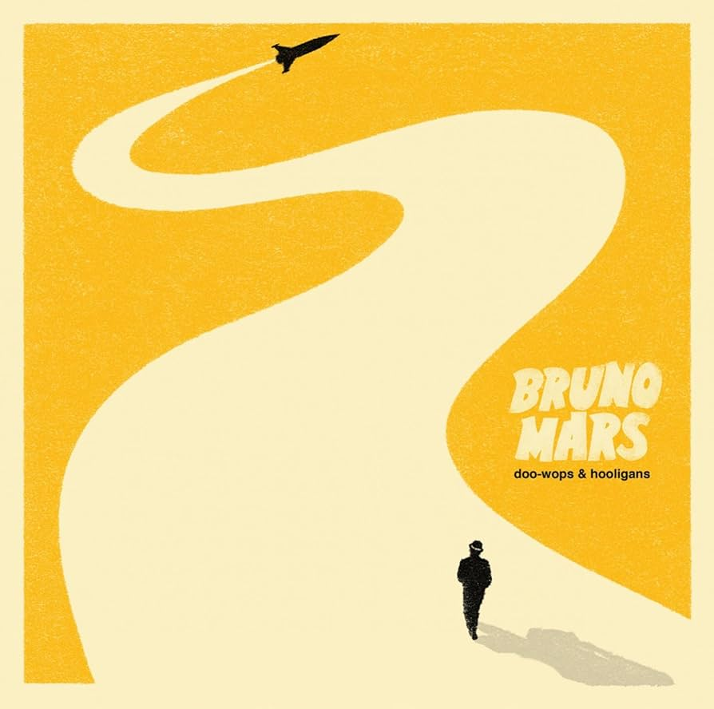

Carreira musical do Beuno Mars:
Início e Infância Musical:
Bruno Mars, nascido Peter Gene Hernandez, cresceu em uma família musical no Havaí. Desde cedo, ele demonstrou talento para a música e o entretenimento, chegando a se apresentar como imitador de Elvis Presley ainda criança.
Mudança para Los Angeles e Primeiros Passos na Composição:
Aos 17 anos, Mars se mudou para Los Angeles, buscando oportunidades no cenário musical. Ele começou como compositor e produtor, colaborando com artistas e escrevendo canções de sucesso, incluindo “Right Round” de Flo Rida e “Wavin' Flag” de K’naa
Álbum de Estreia - Doo-Wops & Hooligans (2010):
Com o lançamento do primeiro álbum, ele rapidamente alcançou sucesso global com hits como “Just the Way You Are” e “Grenade”. O álbum o estabeleceu como uma estrela pop e rendeu prêmios e indicações ao Grammy.
Segundo Álbum - Unorthodox Jukebox (2012):
Seu segundo álbum trouxe ainda mais sucessos, como “Locked Out of Heaven” e “When I Was Your Man”. O álbum foi um sucesso de vendas e consolidou seu estilo único, mesclando elementos de pop, reggae e soul.
Performance no Super Bowl (2014):
Mars foi o destaque do show do intervalo do Super Bowl em 2014, um marco importante em sua carreira, que consolidou sua popularidade nos Estados Unidos e globalmente.
Terceiro Álbum - 24K Magic (2016):
Lançando um álbum com forte influência do funk e R&B, Mars voltou a dominar as paradas com “24K Magic”, “That’s What I Like” e “Finesse”. Este álbum foi altamente premiado e reafirmou sua versatilidade musical.
Parcerias e Colaboração com Anderson .Paak – Silk Sonic (2021):
Mars formou a dupla Silk Sonic com Anderson .Paak, e juntos lançaram o single “Leave the Door Open”, que foi um sucesso e mostrou seu domínio no estilo soul dos anos 70.
Legado e Prêmios:
Bruno Mars é um dos artistas mais premiados de sua geração, com Grammys e outros prêmios em diversas categorias. Ele é conhecido por suas performances ao vivo e pelo domínio de vários estilos musicais, sendo um dos artistas mais completos e versáteis da indústria atual.